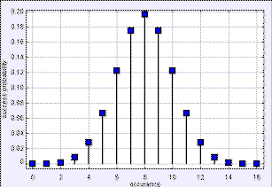
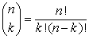
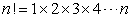
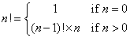

二項式係數圖
二項式係數模型展現的是從 n 個物品中選出 k 個物品有幾種可能，它被稱作 二項式係數 也可以用來計算 n 個硬幣的有幾個正面幾個反面的機率
二項式係數可以用階乘來計算 階乘

n 階乘 (n!) 是所有小於等於 n 的正整數的乘積
.
零階乘被定義為1(0! = 1)。n! 可以用把前一個 (n-1)! 乘上 n 的遞迴定義來計算

這個計算階乘的演算法不斷的重複遞迴直到它遇到 0! 並返回(return)，因為許多的階乘會一直被重複的計算，為求快速，我們便把已經算過的階乘存到一個陣列 (array) 裡，用EJS來測試這個模型並注意到模型中的 factorials 陣列將他們算過的值記起來， 計算二項式係數不需要花多少時間，因為每一個階乘只會被計算一次
雖然二項式係數是一個整數，但是這個模型用的是浮點數，以避免溢位，就算如此，最大可計算的階乘也不過 170!，再上去一階 171! 他就會超過 8 位元組 IEEE 754 浮點數標準的最大上限(大約1.79769313486231570E+308)
創建一個用整數做運算的模型，如果用 int 你的階乘最大可以乘到多少?那用long呢?
斯特靈近似 可以計算階乘而不會溢位
這個近似有多精準?建立一個可以顯示到170!以下的模型
下列的EJS模型是在 An Introduction to Computer Simulation Methods的第七章
額外的模型會加進這章節
二項式係數模型(The Binomial Coefficient model)是由 Wolfgang Christian 用 the Easy Java Simulations (EJS) modeling 工具 版本 4.2 建立的。你可以自行查看修改這個EJS模型，在程式中單擊右鍵，並從跳出的選單選取 "Open Ejs Model"
更多有關 EJS 的資訊可以在下面連結找到: <http://www.um.es/fem/Ejs/> 還有 the OSP ComPADRE collection <http://www.compadre.org/OSP/>.